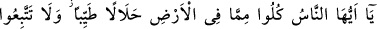
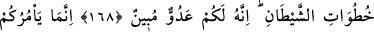
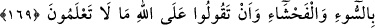
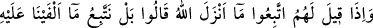
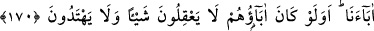
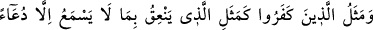
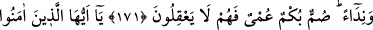
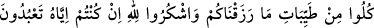
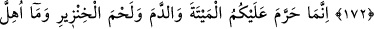
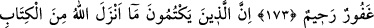
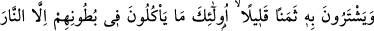
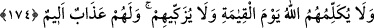
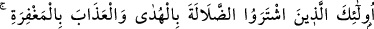
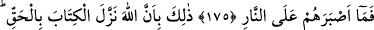
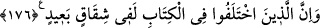
HELÂL VE TEMİZ
YİYECEKLER
168. Ey insanlar! Yeryüzünde bulunanların helâl ve temiz olanlarından yeyin,
şeytanın peşine düşmeyin; zirâ şeytan sizin açık bir düşmanınızdır.
169. O size ancak kötülüğü, çirkini ve Allah hakkında bilmediğiniz şeyleri
söylemenizi emreder.
170. Onlara (müşriklere): Allah’ın indirdiğine uyun, denildiği zaman onlar,
“Hayır! Biz atalarımızı üzerinde bulduğumuz yola uyarız” dediler. Ya ataları bir
şey anlamamış, doğruyu da bulamamış idiyseler?
171. (Hidâyet çağrısına kulak vermeyen) kâfirlerin durumu, sadece çobanın
bağırıp çağırmasını işiten hayvanların durumuna benzer. Çünkü onlar sağırlar,
dilsizler ve körlerdir. Bu sebeple düşünmezler.
172. Ey îmân edenler! Size verdiğimiz rızıkların temiz olanlarından yeyin, eğer